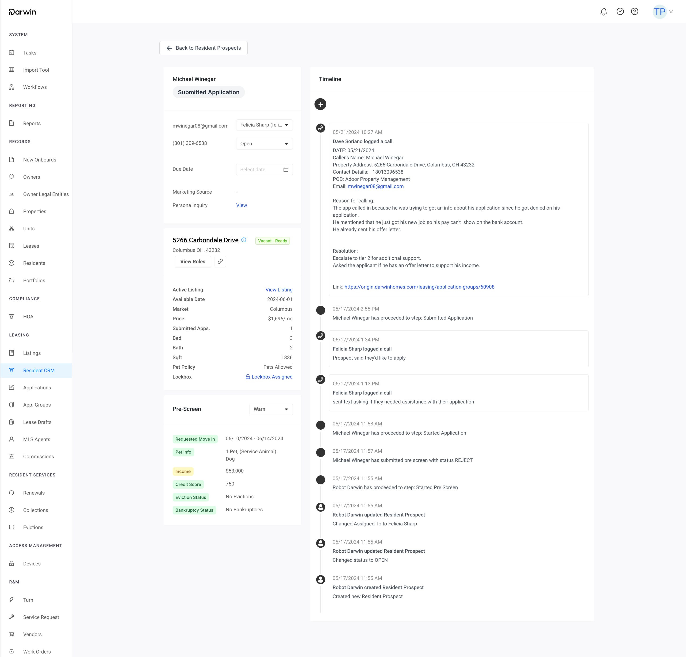
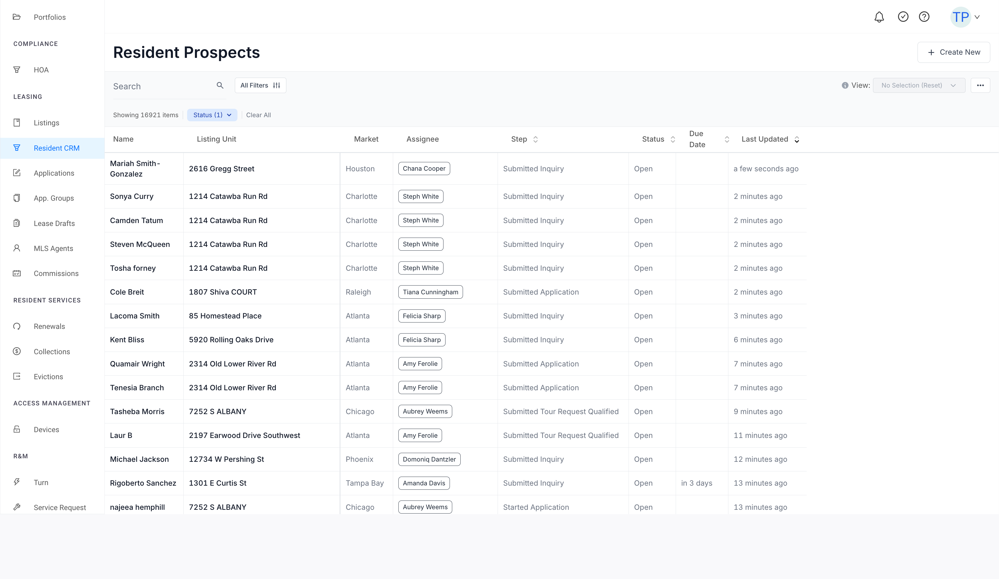
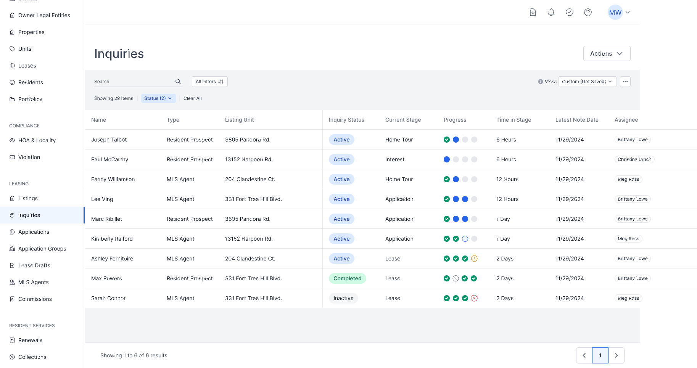
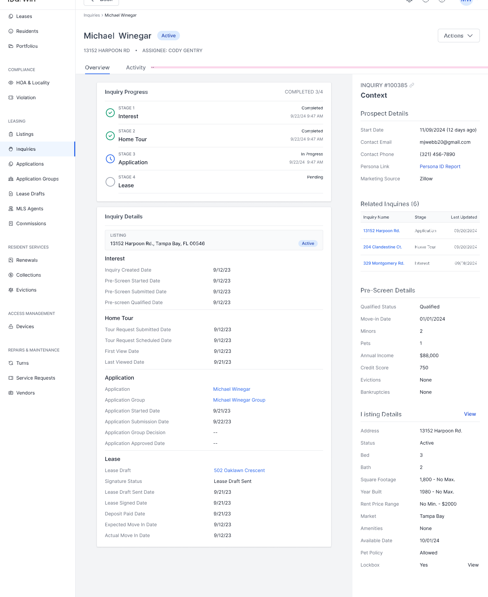
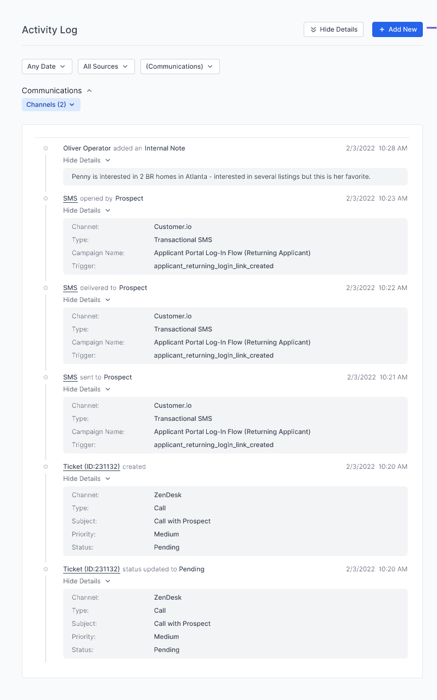
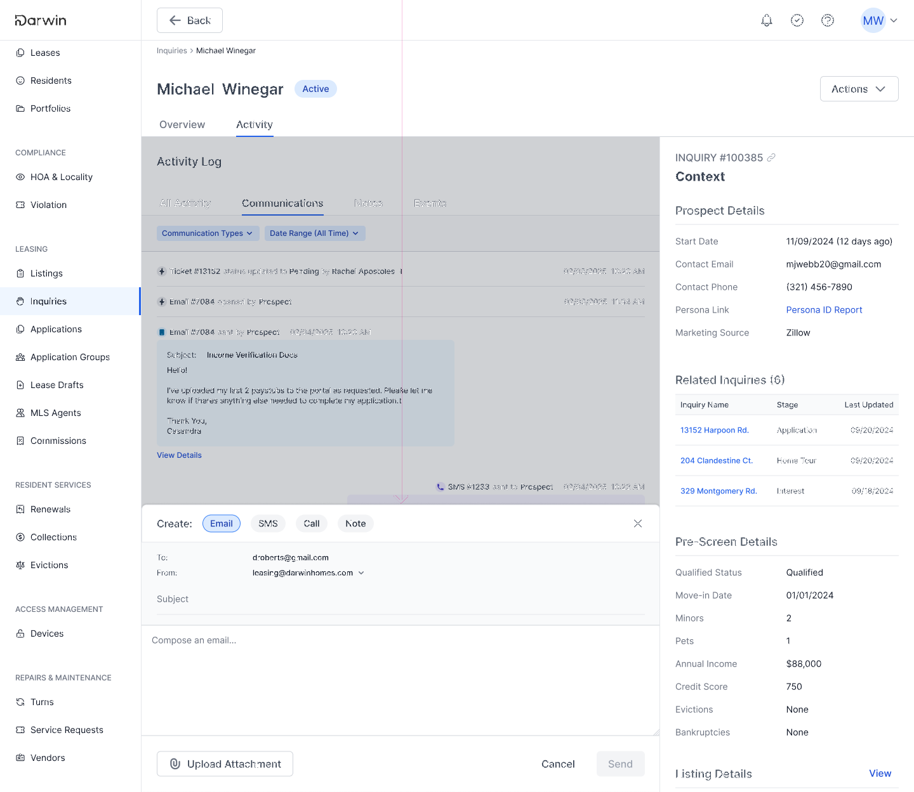

Outcomes
Time from a prospect's first interest to a signed lease dropped by four days, homes started leasing in under 30 days, and the leasing team stopped running its day out of spreadsheets and third-party dashboards.
Context
Darwin Homes manages single-family rentals for institutional owners. Thousands of homes across a dozen markets, each one listed, toured, applied for, and leased through our platform. When the company moved upmarket from retail landlords with a handful of houses to institutional portfolios with thousands, the leasing CRM was the first thing to break. It had been built for the small end of the market, and it showed.
Our newest client made it explicit. A working CRM was a hard requirement before they would commit the remaining 3,000-plus properties of their portfolio, and they needed it running before peak leasing season. That gave us a real deadline attached to real revenue, which is a rare and useful thing to have.
The problem
The flaw was structural. A record was created every time somebody inquired about a home, so the system was organized around properties, not people. One prospect interested in two houses became two unrelated records, each with half the story. Everything else followed from that.

- Status carried no information. Sixteen thousand records, all marked Open, with actual progress buried in a text field. There was no way to sort by urgency, because nothing in the data expressed urgency.
- Duplicate people everywhere. Finding out how far along someone was, when they were last contacted, and who contacted them meant opening several records and reconstructing the story by hand.
- Nobody used it. Leasing ops ran the real process in spreadsheets, third-party dashboards, and external messaging tools, then back-filled the CRM afterward so the next person had breadcrumbs. They were doing the work twice.
- Communication was scattered. Email, SMS, calls, and marketing messages each lived somewhere else. No single thread per person, which is exactly the context an agent needs to keep a prospect warm.
- Nothing ever ended. There was no state for a prospect who signed, and none for a prospect who did not qualify. Dead records sat in the pipeline and made our numbers look worse than they were to the client reading them.
"Agents were chasing one person across five tools to answer one question: where is this person, and what happens next?"
What I did
Interviewed the leasing team
I sat with leasing operators and walked through their actual day. Six things came up over and over: no way to prioritize by interest or urgency, constant searching because inquiries were never grouped by person, communication split across channels and tools, the same screening information re-collected for every property, stage and status mashed into one ambiguous field, and inquiries that stayed open long after the home was leased.
The finding that mattered most was not on the list. The CRM was not slow or awkward. It was abandoned. Once I understood that everything real was happening in a spreadsheet, the design question changed from "how do we improve this tool" to "what would have to be true for them to work here instead."
Mapped the funnel end to end
With the incoming client in the room, we mapped the whole journey from listing to signed lease and marked where things stalled. The useful discovery was that the leasing pipeline is close to standardized across the industry. That meant I could commit to one opinionated model instead of designing around endless edge cases, which is what saved us the time we did not have.
Studied how other CRMs handle a person
I looked at how proptech and sales CRMs organize one customer's communications, actions, and history. The pattern held across all of them: about two-thirds of the content area goes to dynamic, high-priority information like stage and next action, and the remaining third to static reference data you look at while deciding. Data-dense was the norm, not the exception. That gave me permission to stop protecting white space and design for scanning.
The hard part
The right answer was to restructure records around the person. Engineering sized that migration and it was not going to land before leasing season. Separately, leadership pushed back on the prospect-first view entirely. They still wanted to see each property inquiry on its own, even though the research pointed the other way.
I could have spent the runway arguing for the pure version and shipped nothing. Instead I took the constraint as the brief: keep the records where they are, at the inquiry level, and move the consolidation into the experience. One prospect view that pulls in every home they have engaged, where each one stands, and who spoke to them last, while every individual inquiry stays searchable and filterable the way leadership wanted. I tested it with internal ops before we built it.
The duplicate records still existed underneath. For the person doing the job, they stopped mattering.
What shipped
A four-stage pipeline driven by what the prospect does
Interest, Home Tour, Application, Lease. Stage and sub-status derive from the prospect's own actions, submitting a pre-screen, requesting a tour, starting an application, rather than from what an agent remembers to update. That one decision killed the drift between stage, status, and reality that had made the old data untrustworthy.


One view of a person
The overview tab leads with progress and the dates behind each stage, and the right rail holds context: prospect details, pre-screen results, listing details, and every related inquiry that person has open. Six related inquiries in the example below, which under the old model would have been six separate records nobody connected.

An activity log you can actually read
The old timeline dumped system events and pasted call notes into one undifferentiated feed. The rebuilt log separates communications, notes, and events, shows the full note inline instead of hiding it behind an expand, and surfaces the latest note in both the table and the overview tab. It also fixed a bug where notes only appeared under the Activity filter, which meant agents had been failing to find notes that were there the whole time.

Communications inside the record
Phase two brought email, SMS, and calls into the inquiry itself, auto-linked back to the right prospect and listing. It removed the round trip through external ticketing and the manual step of coding a conversation back to a record, which in practice simply got skipped. I designed and specced phases two and three; they shipped after I left.

Scope discipline
A short release with a hard date is mostly a series of small refusals. A few from the planning log:
- Cut the manual "mark as inactive" action from v1 rather than build a second way to do something the system could infer.
- Dropped a "put on hold" action once we confirmed existing waitlist logic already covered every case it was meant to handle.
- Defined current stage as the latest active or completed stage rather than the next one not yet started, which removed a whole category of ambiguity from the table.
- Held the backend rename of the underlying model until after release so it would not block the front end.
None of these are interesting on their own. Together they are the reason the date held.
Reflection
This was a lesson in shipping the version that fits the window. The structurally correct solution would have missed the client deadline and the leasing season, and being right in Q3 would not have been worth much. What I would do differently is get the disagreement about prospect-level versus property-level views into one room earlier, with the research on the table, instead of resolving it in a review after the concept was already drawn. I spent about two weeks on a compromise I probably could have reached in three days with the right people present.
The client released their portfolio. The CRM went from the tool the leasing team avoided to the one they ran the day in. And the object detail framework we built for it, progress up top, context in the rail, activity in its own tab, got reused across other record types in the platform, which was not the goal but turned out to be the most durable part.